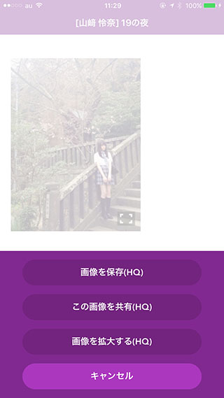
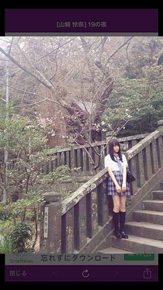
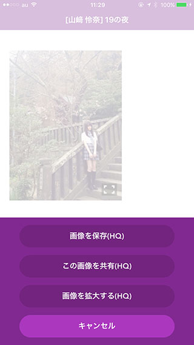
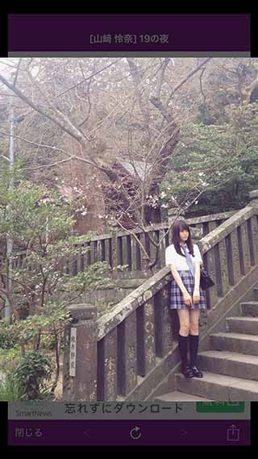

お知らせ
突然のプッシュ通知失礼します。
この度、nogi2をリリースしましたので
そのお知らせをと思って送りました。
ダウンロードする
以下にアプリの説明を置いておきます、よかったら見て頂けると嬉しいです。
ブログ
keyaki2ベースで作成しました。
乃木坂46のブログを閲覧できます。
細かい部分で
乃木坂に特化した作りになっています。
例えば、
乃木坂のブログには高画質版の画像があります。
keyaki2では画像を長押しした時に
出るメニューですが、
nogi2の場合には
高画質版の画像が存在する場合には
「（HQ）」と表示されます。
 



ブログの更新通知は
サーバでも取得していますが、
ユーザがブログ一覧画面で
引っ張って更新を行うと
そのタイミングでも
新しい記事がないか確認を行います。
お昼休みやちょっとした空き時間、
氣になった時に見てもらえると嬉しいです。
やってくれるユーザが多ければ多いほど、新着通知の精度が上がるシステムになっています。
残りの機能としてはほぼkeyaki2と同等です。
よろしくお願いします。
ダウンロードする
- nogi2 -